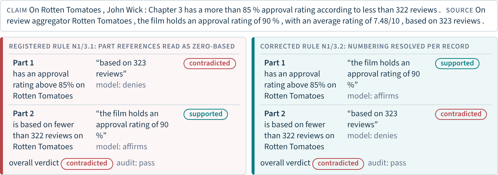
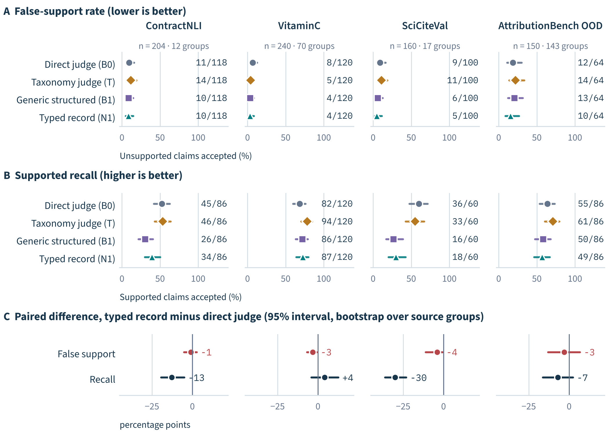
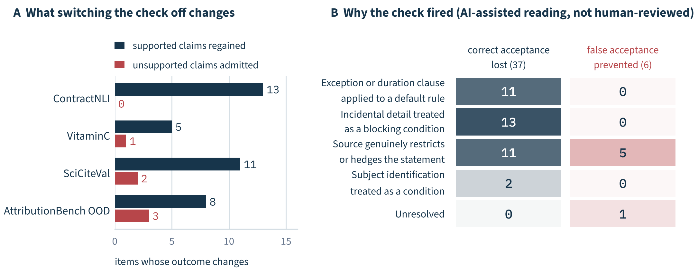
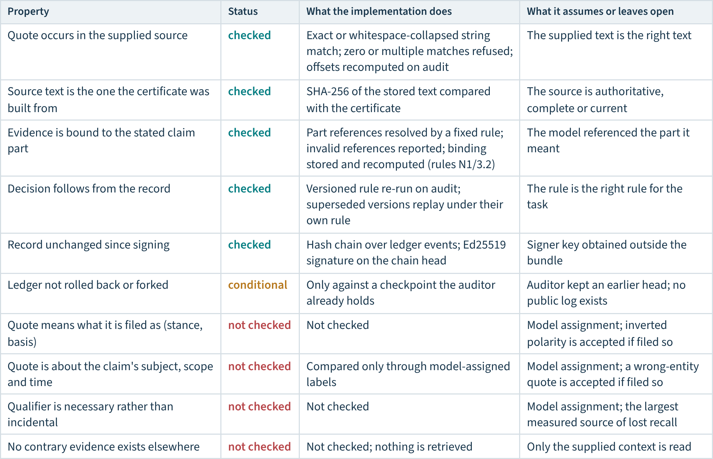
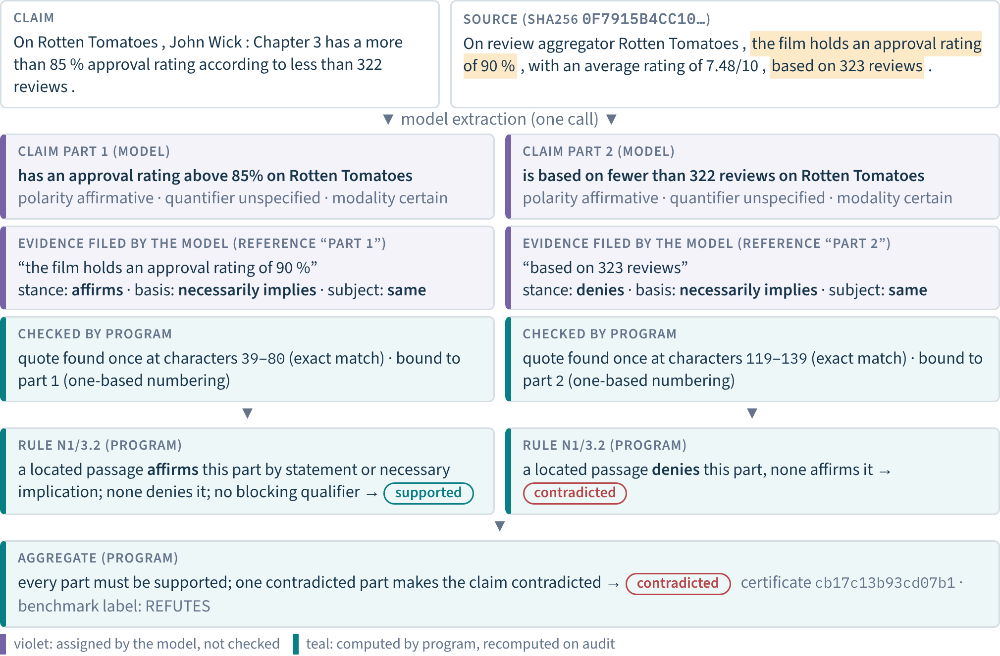
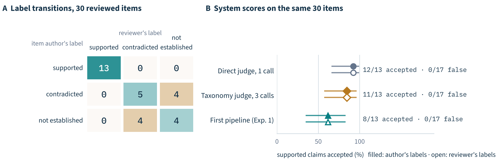
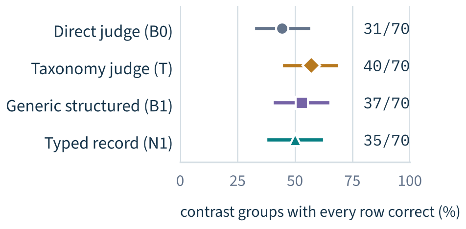
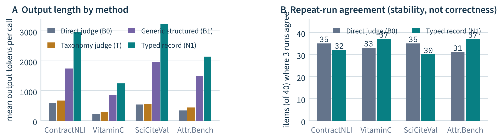
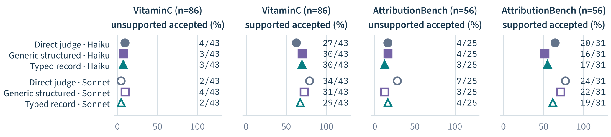

1 Research conducted at the AI × Epistemics Research Sprint, November 2026 (Track 2, trust infrastructure).
A support label is a conclusion. When a tool says a source supports a claim, a reader who cannot see which passage was relied on, what it was taken to say, and which conditions were considered has to trust the grader. Early epistemic tools tend to be trusted whether or not they earn it (Finnveden, 2024), so the form of the evidence a checker leaves behind matters as much as its accuracy.
Three questions are easily run together and we keep them apart throughout. (i) Does the quoted passage occur in the supplied source? (ii) Does that passage support the proposition, for the right subject, at the claimed scope and strength? (iii) Can the stored decision be reproduced and shown to be unaltered? A program can answer (i) and (iii). Question (ii) is a reading, and in our system it is made by a language model. A signature on the record does not make the reading right.
Most citation failures we care about are failures of fit rather than fabrication: the source speaks of a narrower population, hedges where the claim is flat, attaches a precondition the claim drops, or says the opposite. Nyāya epistemology treats exactly this: an inference fails not only when its reason is false but when the reason is absent from the subject, holds of only part of it, holds only under an unstated condition, or is defeated by stronger evidence. We asked whether a record built on those distinctions improves decisions, and what it costs.
We organise the paper around two questions. Q1: which rule changes what a citation verifier accepts? Q2: what can an auditor actually establish from a replayable certificate? Our main contributions are:
Attribution and citation evaluation. ALCE (Gao et al., 2023) scores citation quality with an entailment model. AttributionBench (Li et al., 2024) shows that judging whether evidence supports a statement remains hard for fine-tuned and prompted models; we use its out-of-distribution split. VitaminC (Schuster et al., 2021) pairs claims with evidence that differs in one decisive fact. ContractNLI (Koreeda and Manning, 2021) poses document-level entailment over contracts with conditions and exceptions. SciCiteVal (Liu et al., 2026) tests citation correctness with human-written distortions. AVeriTeC (Schlichtkrull et al., 2023) supplies real-world claims with evidence.
Rationales and structure. ERASER (DeYoung et al., 2020) separates rationale agreement with human evidence from whether a rationale is sufficient or necessary for the model's prediction; a quoted span here is a rationale in the first sense only, and we make no faithfulness claim about the model's internal computation. FActScore (Min et al., 2023) decomposes text into atomic facts before checking. Logic-LM (Pan et al., 2023) has a model translate a problem into a symbolic form that a solver executes. Our system is narrower: no general logic or solver, only a fixed rule over a small typed record whose entries are tied to located quotations, with silence read as unknown rather than false. Its weak point is the one that family is known for: the translation step carries the errors.
What this adds. We do not claim novelty for decomposition, quotation grounding or fine-grained failure labels. Someone would use this method over a direct judge when a third party must be able to recompute and challenge a decision, not for accuracy. The new information is a measurement of what that record costs, which of its components change outcomes, and what an audit of it can and cannot establish.
The classical five-membered inference names a subject (pakṣa), a property claimed of it (sādhya), a reason (hetu), and a general relation that licenses the step from reason to property (vyāpti), shown through examples. A reason can be present in the subject yet fail because it holds only under an additional condition (upādhi), strays to cases lacking the property, or is defeated by a stronger or equal counter-consideration. Table 1 lists what we implemented for each concern and, as important, what the implementation does not capture.
| Nyāya concern | Implemented field | Use in the rule | Engineering approximation |
|---|---|---|---|
| Subject (pakṣa) | Claim subject; per passage, subject_match: same, broader, narrower, different | Only “same” or “broader” passages can affirm or deny | The match is the model's label. A quote about the wrong entity counts if labelled “same”. |
| Property claimed (sādhya) | Claim parts, each with polarity, quantifier, modality | Every part must be supported; a possibility or “some” part needs one witness | Parts and their strength are the model's reading of the claim. |
| Reason (hetu) | A quoted passage with stance toward the part as written | Affirm, deny, weaker, unrelated | A quotation is not automatically a sufficient reason. Only its occurrence is checked. |
| Warranting relation (vyāpti) | basis: states, necessarily implies, suggests | “Suggests” (likelihood, examples) never supports | A label, not a demonstrated relation. “Necessarily implies” is asserted by the model, never derived. |
| Unstated condition (upādhi) | Quoted qualifiers typed as necessary condition, scope, temporal, exception, uncertainty, incidental | Unstated blocking types defeat support; exceptions defeat only universally worded claims | Covers conditions the source states and the model notices and types correctly. No search for unstated ones. |
| Defeat and counterbalance | Denying passages; conflict flag | Denial gives contradicted; passages on both sides give not established and both are kept | Only within the supplied context. No ranking of sources; nothing is retrieved. |
Table 1. How each Nyāya concern is represented. The right-hand column is what separates the classical concept from this implementation. The Sanskrit terms are glosses on the fields; they are not evidence that a decision is correct.
All systems use claude-haiku-5-5 through a headless command-line interface (the provider-reported identifier on every call), default sampling, no tools, one isolated request per call, and the same claim, source, labelling policy and one-paragraph task note per benchmark. B0 is a direct judge returning supported, contradicted or not established. T is the same judge given the failure taxonomy as definitions. B1 is a generic structured verifier: claim parts; per part, quoted evidence with a relation and same-entity and same-scope flags; quoted missing conditions; a fixed rule. N1 is the typed record of Table 1 with its own fixed rule. Both structured systems locate each quotation by exact or whitespace-collapsed match; a quotation found zero or several times is refused and nothing is repaired. Rule-only ablations reuse N1's own reply with qualifier enforcement or quotation checking switched off, so they differ in nothing else. B1 and N1 prompts both use plain English labels, so the comparison is between representations, not vocabularies.
Each decision is appended to a hash-chained ledger (a pre-existing component) whose head is signed with Ed25519. An audit discards every derived field and recomputes it: quotation locations from the hashed source text, the binding of evidence to claim parts, then the decision. Certificates carry a rule version and replay only under that version. The signer's key must come from outside the bundle. An older, correctly signed ledger still passes unless the auditor holds a later checkpoint, so this is not a transparency log.
Experiment 1 used 117 items we built (72 from Indian statutes and the Constitution, 45 from AVeriTeC evidence passages; 49 labelled supported) and an earlier five-field pipeline with one untyped “omitted condition” flag. Its labels were drafted by an AI assistant. Experiment 2 evaluated the revised record on benchmark labels: 12 whole ContractNLI test contracts × 17 hypotheses (204 items, full document in context); 70 complete VitaminC contrast groups (240); 160 SciCiteVal items in whole source families, never used in development; and 150 AttributionBench out-of-distribution items. Samples were fixed by seed before any prediction. Development used 40 items from each of three development splits and two rounds of prompt revision applied to every system.
For each experiment the data hashes, prompts, scorer and analysis plan were committed to the repository before the first held-out call (a prospective repository freeze; there is no public preregistration). We report false-support rate (unsupported items accepted / all unsupported), supported recall, and three-way accuracy where the benchmark has three labels, per dataset and never as one pooled estimate. Wilson intervals describe single rates. Paired differences use a bootstrap that resamples source groups (contracts, contrast groups, source papers, reference bundles: {{grp}}), because items from one source are not independent. Comparisons are unadjusted for multiplicity. The held-out evaluation made {{calls}} calls (${{cost}}; none failed); with the {{dev_calls}} development calls the total is {{all_calls}} (${{all_cost}}).
A defect found after the freeze. While preparing a worked example we found that the registered rule read part references as zero-based, whereas the model numbers parts from 1 in every record. In all {{multi}} multi-part records evidence was attached to the wrong part. Because every part must be supported, verdicts were almost unaffected: {{status_changed}} of 754 N1 outcomes change. The per-part explanation changed on {{reasons_changed}} items. We fixed the binding (rules N1/3.2, B1/1.1), added regression tests, and replayed the frozen model replies without new calls. All Experiment 2 numbers below use the corrected rules; the registered results are kept unchanged alongside, with a before-and-after table in the repository.

Figure 1. One recorded model reading, two rule versions. Under the registered rule each quotation was bound to the other claim part, so the explanation named the wrong part; the overall verdict is the same, and both certificates pass audit. Appendix Figure A1 shows the corrected certificate in full.

Figure 2. Experiment 2, held-out, one model. A, B: observed rates with Wilson 95% intervals and counts. C: typed record minus direct judge, in percentage points, with intervals from 5,000 bootstrap resamples of source groups (group counts in the panel headers; ContractNLI has only 12). Full counts and three-way accuracy are in Appendix Table A1.
N1 accepted no more unsupported items than the direct judge on any dataset: {{fsN}} of {{fsn}} in total against {{fsB0}} (B1 {{fsB1}}, T {{fsT}}). The paired differences are small (ContractNLI {{cn_fs}}; VitaminC {{vc_fs}}; SciCiteVal {{sc_fs}}; AttributionBench {{ab_fs}}), and with five unadjusted comparisons per dataset the two intervals that exclude zero are suggestive only. Recall is lower on three datasets (ContractNLI {{cn_rc}}; SciCiteVal {{sc_rc}}; AttributionBench {{ab_rc}}) and not on VitaminC ({{vc_rc}}). Three-way accuracy was {{cn_acc}} for B0 on ContractNLI ({{cn_d}}) and {{vc_acc}} on VitaminC ({{vc_d}}). The taxonomy-prompted judge, which builds no record and applies no rule, had the highest recall on three of four datasets.
On SciCiteVal the lower false-support is concentrated in one distortion type: of {{tpn}} “tortured phrase” items B0 accepted {{tpB0}} and N1 {{tpN}}; over the 60 related-but-incorrect items B0 accepted {{incB0}} and N1 {{incN}}; of the 60 correct ones B0 accepted {{corB0}} and N1 {{corN}}. Whether such a trade is worthwhile depends on the relative cost of the two errors, which we did not measure.
Against B1, N1's three-way accuracy differs by {{cn_b1}} on ContractNLI and {{vc_b1}} on VitaminC, and false-support counts are within three items everywhere. These intervals are wide enough to hide a modest difference in either direction; this design cannot establish equivalence. On present evidence the typed qualifiers, graded subject match and stance-against-the-claim change what a reader can see in the record, not the decisions.

Figure 3. A: every item whose outcome changes when qualifier enforcement is switched off on the same model reply. All {{qt}} changes are from not established to supported; none goes the other way. B: why the check fired, from a single-pass reading of all {{qt}} cases by the AI assistant that wrote the code. These diagnoses are not human-reviewed.
Qualifier enforcement is the component that most separates the typed record from a direct judgment, and it is where its cost lies. Switching it off regains {{qt_sup}} supported claims and admits {{qt_uns}} unsupported ones. By the assistant's reading, {{m_inc}} of the lost acceptances were incidental details filed as blocking conditions, {{m_exc}} were exception or duration clauses applied to default-rule claims (mostly ContractNLI hypotheses containing “any”, which the model read as universal), {{m_subj}} were statements identifying the subject, and in {{m_gen_s}} the source does restrict or hedge the statement although the benchmark counts the claim as supported. In {{m_gen_u}} of the {{qt_uns}} prevented false acceptances the qualifier was a real restriction. So the check is correct in principle about a real phenomenon and unreliable in execution: the model cannot yet be trusted to tell a necessary condition from an incidental one. A diagnostic that replays human-corrected records would separate extraction error from rule error; it is pending because no human-corrected records exist.
The verbatim check refused {{q_ref}} of {{qn}} N1 quotations (not found, or found more than once) on {{q_ref_items}} items, and {{qb_ref}} of B1's. No refusal changed a final decision, so the grounding ablation is identical to N1 on every dataset. With this model the extractor rarely misquotes; the check's role here is to make the record auditable. On 40-item subsets with three calls each, majority voting changed supported recall by {{maj_txt}}; all three runs agreed on: {{stab_txt}}. Agreement measures stability, not correctness. On ContractNLI an N1 call produced about {{n1tok}} output tokens (${{n1c}}) against {{b0tok}} (${{b0c}}) for B0 (Figure A4).
VitaminC groups share a claim or a sentence and differ in one decisive fact; a system is sensitive to evidence only if it gets every row right. All rows were correct for {{cgB0}} of 70 groups with B0, {{cgT}} with T, {{cgB1}} with B1 and {{cgN}} with N1 (Figure A3). As a partial follow-up we ran B0, B1 and N1 with claude-sonnet-5-5, a larger model from the same vendor, on a seeded subsample frozen beforehand. The run stopped at an account usage limit after two of the four subsamples ({{x3_calls}} calls); the two incomplete datasets are not scored. On VitaminC ({{x3v_n}} items; false support · recall) the smaller model gave {{x3v_h}} and the larger {{x3v_s}}; on AttributionBench ({{x3a_n}} items) {{x3a_h}} and {{x3a_s}}. With the larger model N1's recall was below B0's on both (VitaminC {{x3v_rs}}; AttributionBench {{x3a_rs}} points), so the conservative pattern is not confined to one model, though on VitaminC it appears only with the larger one (Figure A5). No model from another vendor was available.
On our 117 items no system accepted any of the 68 unsupported claims, so the set cannot separate systems on false support; supported recall was {{e1_d}} for a one-call direct judge, {{e1_t}} for the taxonomy judge and {{e1_p}} for the first pipeline. None of 19 fixed adversarial items fooled any system; the test is small, non-adaptive and written by the method's author. Reading all 20 pipeline errors from their certificates attributed {{exc}} to an exception or incidental detail treated as a blocking condition, {{pol}} to a negative source sentence filed as denying a negative claim, and {{ann}} to a doubtful label (the assistant's diagnoses).
The review (Appendix Figure A2) addresses the main weakness of Experiment 1, AI-drafted labels, only in part. The reviewer's binary judgment matched the original label on {{hb}} items (Wilson lower bound 89%), and on {{h3}} three-way (κ = {{h3k}}); all eight three-way differences are between contradicted and not established. On these 30 items the direct judge recovered {{hs_d}} supported claims, the taxonomy judge {{hs_t}} and the first pipeline {{hs_p}}, with no false support; these binary scores are the same under either label set. This is one reviewer who is also the author and who had seen aggregate results; it is agreement with the original labels, not inter-reviewer reliability, and 87 items remain unreviewed.

Figure 4. What a passing audit establishes, what it assumes, and what it leaves open. Each “checked” row has an automated test that fails when the property is violated; the “not checked” rows have tests asserting that a wrong reading is accepted.
All 117 Experiment 1 certificates and 753 Experiment 2 certificates replay and pass audit against separately held keys; the one Experiment 2 item without a certificate had a malformed model reply and is scored as a failure. Tests show the audit failing at the right step for a one-character edit, reordered, deleted and truncated events, a substituted signing key, a missing trusted key, rollback against a held checkpoint, a swapped source text, and altered offsets, part bindings, verdicts or statuses even when the forger recomputes identifiers and the chain. Three tests, counted separately as known-limit tests, assert that a quotation filed with inverted polarity, attached to the wrong entity, or read as causal when it is correlational is accepted if the model files it so. The part-binding defect shows both sides of this boundary: every affected certificate passed its audit, because the audit replays the rule as written; the defect was found by a person reading one record against its source.
What the results support. For these models and tasks the bottleneck is reading. Asking the model to externalise its reading into a typed record did not improve the reading, and a fixed rule over that record inherits each misreading and adds rigidity where the model over-reports conditions. The interpretability on offer is at the level of the system: which recorded fields the program used, and how the decision changes when a field changes (shown for single fields on frozen records in the test suite, and for real evidence changes in VitaminC pairs). It is not evidence about the model's internal computation. A practical design that follows is to take the label from the best available judge and attach the quote-grounded record as inspectable evidence, with qualifiers displayed as warnings rather than enforced.
Proposed uses, not measured. Scientific editing: flagging citing sentences whose cited passage is narrower or more hedged, with the passage shown. Contract review: listing, per obligation, the clause relied on and the provisos attached. Evaluation debugging: locating which field of a failing verifier's record is wrong, as we did for our own rule. Whether people catch more errors with such records than with a judge's one-line rationale was not tested.
Limitations. (i) One primary model; the second-model run is partial and from the same vendor. (ii) Modest samples, wide intervals, unadjusted comparisons; ContractNLI has 12 documents and 17 recurring hypotheses; SciCiteVal's incorrect items are human-written distortions. (iii) One labelling policy and task notes written from benchmark documentation were given to every system; a mismatch with a benchmark's conventions affects all systems, perhaps unequally. Benchmark label noise was not corrected. (iv) Experiment 1 labels are AI-drafted; 30 of 117 were reviewed, by the author. (v) Qualifier mechanisms and Experiment 1 error causes are AI-assisted diagnoses. (vi) The corrected rules were applied after the freeze; we report both versions. (vii) Subject binding, stance, basis and qualifier type are unchecked model assignments; time is representable only as a qualifier. (viii) No retrieval of counter-evidence, no Lean or solver verification, no human audit study.
Future work. A randomised study of whether reviewers detect and localise errors faster with the record than with a rationale; human-corrected records to split extraction error from rule error; a second independent reviewer; models from other vendors; qualifiers as warnings attached to a direct judgment.
We set out to show that a Nyāya-inspired, quote-grounded record verifies citations better than asking a model directly. The evidence does not show that. The record yields a more conservative checker with no clear advantage over generic structure, its condition check costs more correct acceptances than the false ones it prevents, and its quotation check changed no decision. What it does provide is a decision that a third party can replay field by field, and that property was useful to us in exactly the way intended: it let us find and correct an error in our own explanations that every automated check had passed.
Submitted with this report: an interactive demonstration that runs offline in a browser (Pramana_Bind_demo.html), and a reproducibility archive holding both experiments' frozen protocols, pinned dataset download and adaptation scripts, all raw model replies, per-item predictions under both rule versions, signed ledgers, the item-to-certificate coverage map, the paired qualifier cases, human-review records, figure data and scripts, tests, and CLAIMS.md, which maps each number in this report to the file and command that produced it.
A.T. conceived the project and its Nyāya-inspired framing, set the research questions and the requirements for honest reporting, directed each stage of implementation, evaluation and revision, carried out the human label review, and reviewed the analysis and the manuscript. Code, experiment execution, figures and drafting were produced with an AI coding assistant under the author's direction (Appendix D).
DeYoung, J., Jain, S., Rajani, N. F., Lehman, E., Xiong, C., Socher, R., Wallace, B. C. (2020). ERASER: A Benchmark to Evaluate Rationalized NLP Models. ACL. aclanthology.org/2020.acl-main.408
Finnveden, L. (2024). What's Important in “AI for Epistemics”? Forethought, August 23. forethought.org/research/whats-important-in-ai-for-epistemics
Gao, T., Yen, H., Yu, J., Chen, D. (2023). Enabling Large Language Models to Generate Text with Citations. EMNLP.
Koreeda, Y., Manning, C. D. (2021). ContractNLI: A Dataset for Document-level Natural Language Inference for Contracts. Findings of EMNLP. aclanthology.org/2021.findings-emnlp.164
Li, Y., Yue, X., Liao, Z., Sun, H. (2024). AttributionBench: How Hard is Automatic Attribution Evaluation? Findings of ACL. aclanthology.org/2024.findings-acl.886
Min, S., Krishna, K., Lyu, X., Lewis, M., Yih, W., Koh, P. W., Iyyer, M., Zettlemoyer, L., Hajishirzi, H. (2023). FActScore: Fine-grained Atomic Evaluation of Factual Precision in Long Form Text Generation. EMNLP.
Pan, L., Albalak, A., Wang, X., Wang, W. Y. (2023). Logic-LM: Empowering Large Language Models with Symbolic Solvers for Faithful Logical Reasoning. Findings of EMNLP. aclanthology.org/2023.findings-emnlp.248
Schlichtkrull, M., Guo, Z., Vlachos, A. (2023). AVeriTeC: A Dataset for Real-world Claim Verification with Evidence from the Web. NeurIPS Datasets and Benchmarks.
Schuster, T., Fisch, A., Barzilay, R. (2021). Get Your Vitamin C! Robust Fact Verification with Contrastive Evidence. NAACL. aclanthology.org/2021.naacl-main.52
Liu, Q., Zhou, Y., Labbé, C. (2026). SciCiteVal: A Multi-Domain Dataset for Scientific Citation Verification. LREC, pp. 1603–1611. doi.org/10.63317/4m84m2k77g97
What the result does and does not establish. It establishes that, for one primary model and four benchmarks, a typed quote-grounded record gave a more conservative checker than a direct judge and no detected advantage over generic structure. It does not establish that structure cannot help with other models, longer sources or adversarial extractors; that any cited source is true (the task is support by a passage); or anything about what the law is (statutory items test agreement with an excerpt).
Over-trust. A signed, hash-chained certificate looks authoritative. Signature and replay show only that the record is unchanged and that its conclusion follows from the recorded quotations and model-assigned labels. Sanskrit terminology and deterministic execution add no evidence of semantic accuracy either. The viewer shows the support decision, human-review status, extraction provenance and integrity result as four separate statuses, and the audit command prints that it does not assert the interpretation is correct.
Use to manipulate rather than inform. A party could run the method until it yields “supported” and publish only that certificate, or choose a passage that supports a claim while omitting a contrary one; nothing forces disclosure of other attempts or sources, and no counter-evidence is retrieved. The documented failure modes (inverted polarity, misattributed entities, selective quotation, mis-typed qualifiers) tell an attacker where such a checker is weakest. We disclose them because the same list tells deployers what not to rely on.
Personal data. None was collected. Benchmark items contain public claims about public figures, some false; they are used as evaluation material. Dataset licences (CC BY 4.0, CC BY-SA 3.0, CC BY-NC 4.0, Apache-2.0) are recorded per item; ContractNLI ships terms of use that should be read before redistribution. The reviewer-facing packet excludes the answer key; the public bundle excludes signing keys.
| {{hdr}} |
|---|
| System | {{sub}}
Table A1. Experiment 2, held-out, corrected rules. FS = unsupported accepted / all unsupported; Rec = supported accepted / all supported; Acc3 = three-way accuracy. The last two rows reuse N1's own reply with one component switched off.

Figure A1. One real certificate under the corrected rule, complete enough to reconstruct the decision. Violet entries are the model's assignments; teal entries are computed by program and recomputed on audit. In the paired VitaminC item the source reads “320 reviews” and the same claim is supported.

Figure A2. Post-evaluation review of a seeded sample of 30 of the 117 Experiment 1 items by the project author, with original labels and system outputs hidden in the packet. A: the reviewer's three-way label against the original (the original three-way value is derived from the item author's subtype). B: system scores on these 30 items; filled and open markers coincide because the binary labels agree.

Figure A3. VitaminC: contrast groups (of 70) in which every row is judged correctly.
A real contrast pair. Claim: “On Rotten Tomatoes, John Wick: Chapter 3 has a more than 85% approval rating according to less than 322 reviews.” Source version 1: “… approval rating of 90%, … based on 320 reviews” → both parts affirmed → supported (benchmark: SUPPORTS). Version 2: “… based on 323 reviews” → the second part denied → contradicted (benchmark: REFUTES).

Figure A4. A: mean output tokens per call. B: items (of 40 per dataset) on which three repeated runs gave the same outcome. Stability is not correctness.

Figure A5. Partial follow-up with a second model on a seeded subsample (filled: claude-haiku-5-5; open: claude-sonnet-5-5, same vendor; same items). Paired N1 − B0 recall difference, larger model: VitaminC {{x3v_rs}}, AttributionBench {{x3a_rs}} points; smaller model on the same items: {{x3v_rh}} and {{x3a_rh}}; difference between models: {{x3v_int}} and {{x3a_int}}. SciCiteVal and ContractNLI did not complete and are not scored.
Pre-existing before 13 November 2026, imported unchanged: the pravrudhi engine 0.6.34 (quotation locator, statute corpus, a constructed symbolic gold set) and pravrudhi_kernel 0.1.0 (hash-chained ledger, canonical JSON, chain verification); the public datasets. New during the sprint: everything in the pramana-bind repository: both record schemas, prompts, decision rules, baselines, signing and audit, Experiment 1 items and labels, adapters, protocols, evaluation and figure scripts, viewer, and all results. Changes made after each freeze (the part-binding fix, the human review, the second-model run) are identified as such.
LLM usage. An AI coding assistant (Claude) wrote the code, drafted the Experiment 1 items and labels, ran the experiments, produced the figures and drafted this report under the author's direction; it also made the error and qualifier diagnoses marked as AI-assisted. A separate AI-generated editorial draft was consulted for structure only; none of its figures or numbers is used. The evaluated systems are smaller models. Every number is read by a script from result files, and CLAIMS.md maps each to its source.
Reviewer provenance. The project author completed a post-evaluation review of 30 held-out items using the blind packet. The reviewer did not see any proposed labels before or during labeling. This is a single-author review. The blind packet contained no system predictions, original labels, rationales or item identifiers. The author had seen aggregate results and a small number of example items in project materials before the review (none of the 30 reviewed items appears with a system outcome in the earlier demo viewer); no further statement about item-level predictions is made. An assistant explained the answer-file format; it supplied no labels or reasons, which are preserved as submitted.